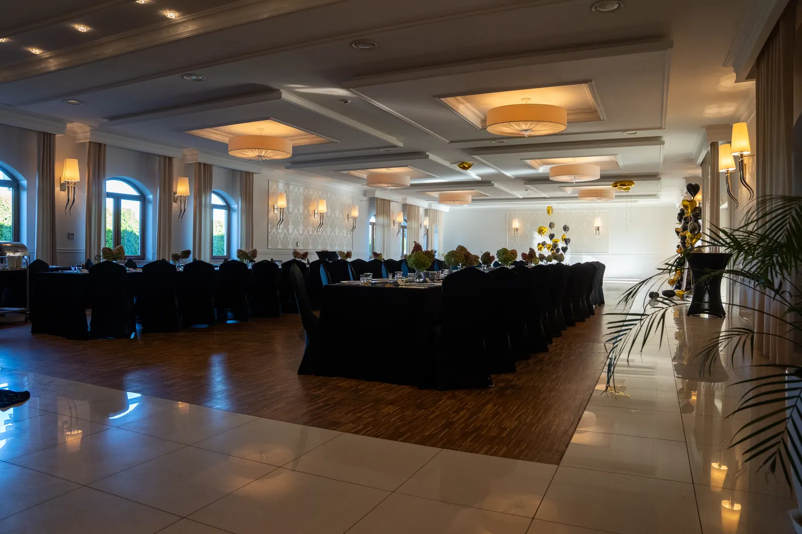
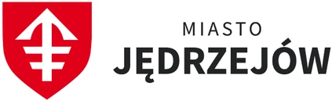
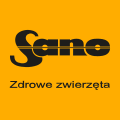
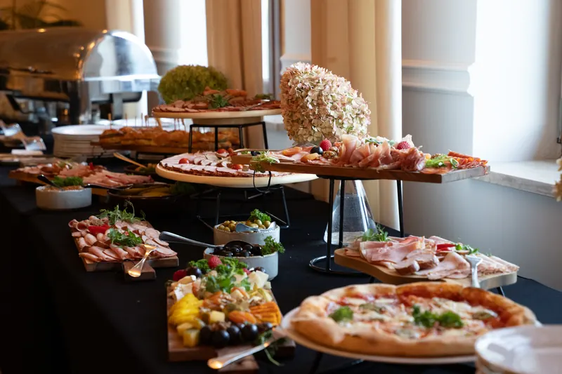

Biznes w Potoku
Konferencje, szkolenia i spotkania firmowe: sale do 200 osób, własna kuchnia, przerwy kawowe i 23 pokoje na miejscu.
Oferta dla firm: Michał Pronobis 532 162 301

Gościli u nas
Szkolenia, konferencje i spotkania firmowe organizowały u nas m.in.:




Zapytaj o ofertę dla firmyMichał Pronobis 532 162 301
Konferencje i szkolenia
Każda z naszych sal jest w pełni klimatyzowana, ma dostęp do światła dziennego (z możliwością zaciemnienia) oraz nowoczesne zaplecze multimedialne. Dbamy o komfort uczestników: przy wszystkich salach przewidzieliśmy miejsce na bufet kawowy oraz szybki dostęp do węzła sanitarnego.
| Sala | Liczba osób | Możliwe ustawienia | Wyposażenie |
|---|---|---|---|
| Sala Balowa | do 200 osób, w zależności od ustawienia | teatralne, podkowa, szkolne, bankietowe | profesjonalne nagłośnienie, rzutnik wysokiej rozdzielczości, wielkoformatowy ekran, mikrofony bezprzewodowe, flipcharty |
| Sala Restauracyjna | do 50 osób, po indywidualnych ustaleniach | konferencyjne, szkolne, podkowa (litera U) | wielkoformatowy telewizor Smart TV lub rzutnik z ekranem, flipchart, szybkie Wi-Fi |
| Patio | do 35 osób, po indywidualnych ustaleniach | - | - |
| Sala Bankietowa | do 30 osób | - | telewizor z łatwym podłączeniem laptopa, flipchart, klimatyzacja |
Sala Balowa
Największa z naszych przestrzeni, łącząca stylowy, elegancki design z nowoczesną funkcjonalnością. Idealna na prestiżowe konferencje, kongresy oraz duże szkolenia.
Przeznaczenie: duże szkolenia, konferencje, prezentacje produktowe, gale i eventy firmowe.
Sala Restauracyjna
Komfortowa i jasna przestrzeń stworzona z myślą o wydarzeniach średniej wielkości, gdzie liczy się skupienie i profesjonalna atmosfera.
Przeznaczenie: warsztaty, szkolenia średniej wielkości, prezentacje multimedialne, spotkania biznesowe.
Patio
Jasna sala z dużymi przeszkleniami.
Sala Bankietowa
Dla mniejszych spotkań, które wymagają prywatności, ciszy i prestiżowej oprawy. Idealna na kluczowe rozmowy biznesowe.
Przeznaczenie: operatywki, narady zarządu, zebrania, kameralne szkolenia, zamknięte spotkania biznesowe.
W każdej sali i w całym obiekcie
- Szybkie, bezprzewodowe Wi-Fi na terenie całego obiektu.
- Nowoczesne ekrany i telewizory, rzutniki, pełne okablowanie.
- Klimatyzacja z indywidualnym sterowaniem w każdej sali.
- Strefy na przerwy kawowe bezpośrednio przy salach.
- Bliskość toalet.
- Łatwa komunikacja między salami a bazą noclegową i restauracją.
Pakiety i przerwy kawowe
Każde wydarzenie firmowe ma inną dynamikę i cele, dlatego nie wierzymy w sztywne schematy. Do każdego klienta podchodzimy indywidualnie i przygotowujemy ofertę skrojoną pod zespół.
Pakiet 1-dniowy: intensywne szkolenie
Na szybkie, konkretne spotkania, operatywki czy jednodniowe warsztaty, z pełnym zapleczem technicznym i przerwami kawowymi.
Pakiet 2-dniowy: konferencja z integracją
Najchętniej wybierany format: intensywny panel szkoleniowy i wieczorna kolacja bankietowa, grill lub spływ kajakowy.
Pakiet 3-dniowy: pełny reset i team building
Szkolenia połączone z pełnym pakietem atrakcji na świeżym powietrzu i wypoczynkiem w naszym obiekcie.

Przerwy kawowe i lunch
Dobre jedzenie to klucz do efektywnego szkolenia. Nasze bufety kawowe i obiady biznesowe organizatorzy chwalą zarówno za smak, jak i estetykę podania.
- Przerwy kawowe klasyczne i premium: świeżo parzona kawa, wybór herbat, domowe ciasta, zdrowe przekąski, owoce, finger food.
- Lunche i obiady biznesowe serwowane lub w formie bufetu.
Spotkania firmowe i integracja
Biznes to nie tylko cyfry i tabelki, to przede wszystkim ludzie i relacje. W Potockim Dworze formalne spotkania naturalnie zmieniają się w udaną integrację. Łączymy lokalną kulturę z nowoczesnym podejściem do organizacji eventów.
Kulinarna oprawa
Nasza restauracja to serce obiektu. Tworzymy autorskie menu oparte na świeżych składnikach najwyższej jakości. Dostosowujemy się do charakteru wydarzenia:
- wykwintne kolacje serwowane - wielodaniowe menu na jubileusze i spotkania biznesowe,
- tematyczne bufety i stoły biesiadne - dania ciepłe i zimne przekąski, od tradycyjnych smaków po finger food,
- menu dedykowane, uwzględniające preferencje dietetyczne gości (wegetariańskie, wegańskie, bezglutenowe).
Firmowy grill i biesiady pod gwiazdami
Chcą Państwo uciec od sztywnej atmosfery? Organizujemy firmowe grille i biesiady, które są doskonałym sposobem na luźną integrację zespołu. Zapach potraw z rusztu, bliskość natury i swobodny klimat pozwalają zresetować siły po całym dniu szkoleń.

Spływy kajakowe meandrami Nidy
Organizujemy spływy kajakowe po pobliskiej Nidzie, jednej z najpiękniejszych i najbardziej naturalnych rzek w regionie, idealnej zarówno na spokojny relaks, jak i sportową integrację.
- Dla każdego: bezpieczna, łagodna trasa, w spływie może wziąć udział każdy pracownik, niezależnie od kondycji.
- Pełna logistyka: transport uczestników z hotelu na miejsce startu, sprzęt oraz powrót.
- Zwieńczenie dnia: spływ łączymy z grillem lub ogniskiem w Potockim Dworze.
Atrakcje dodatkowe
Dzięki rozległemu terenowi i doświadczeniu, we współpracy z profesjonalnymi agencjami wzbogacimy pobyt o dodatkowe atrakcje:
- występy artystyczne i oprawę muzyczną (DJ, zespół na żywo),
- wieczory tematyczne i bankiety,
- zabawy team-buildingowe na świeżym powietrzu.
Noclegi dla biznesu
Efektywne szkolenie wymaga dobrych warunków do wypoczynku. 23 komfortowo urządzone pokoje zapewnią pracownikom i partnerom biznesowym warunki do relaksu po intensywnym dniu i do spokojnej pracy zdalnej.
- Pokoje z łóżkami małżeńskimi (140-180 cm): dla kadry zarządzającej i prelegentów.
- Pokoje z dwoma osobnymi łóżkami: na pobyty integracyjne i dla grup szkoleniowych. Łóżka w większości można połączyć w jedno duże.
- Pokoje 1- i 2-osobowe.
- Śniadanie w cenie każdego noclegu, biurko, szybkie Wi-Fi, telewizor i prywatna łazienka.
Zapytaj o ofertę dla firmy
Opisz wydarzenie, a przygotujemy ofertę dopasowaną do zespołu.